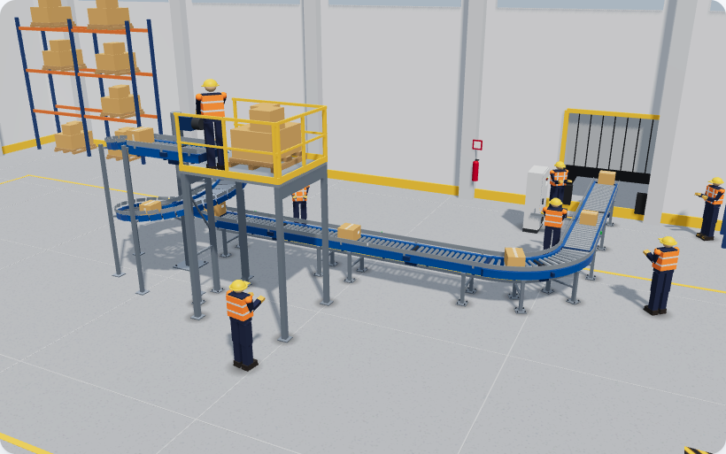

Tramos rectos a piso
Nivelación, alineación y anclaje de camas de rodillos y bandas.
PRODUCTO · INSTALACIÓN
Montamos soportería, tramos, curvas, espirales, acumulación MDR y líneas suspendidas, y dejamos la línea alineada y lista para el arranque, en coordinación con el integrador.

De la instalación a la operación
Cinco etapas que llevan una línea de la soportería a las cajas en movimiento.

QUÉ INSTALAMOS
Recibimos y descargamos el equipo en sitio, montamos cada elemento sobre su soportería y hacemos la puesta a punto mecánica, eléctrica y de seguridad antes del commissioning.
ELEMENTOS
Cada elemento se monta sobre su propia soportería y se alinea con el anterior, conforme al layout aprobado.
Nivelación, alineación y anclaje de camas de rodillos y bandas.
Cambios de dirección con guardas y guías laterales.
Elevación o descenso en poco espacio, con tambor central y soportería.
Cambios de nivel entre plataformas, mezzanine y piso.
Convergencia de líneas, loops de embarque e inducciones con guías.
Zonas motorizadas, sensores y puertas de paso.
Soportería desde estructura y redes de protección.
Pickeo en altura, barandales y accesos.
Cuéntanos tramos, niveles y fechas de montaje.